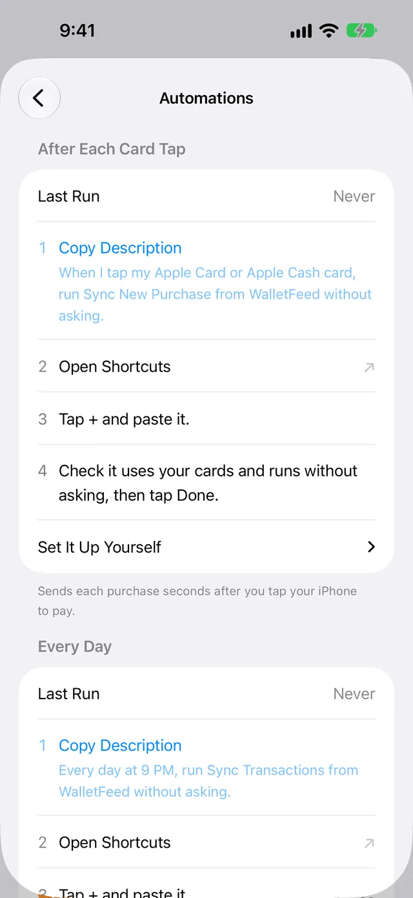
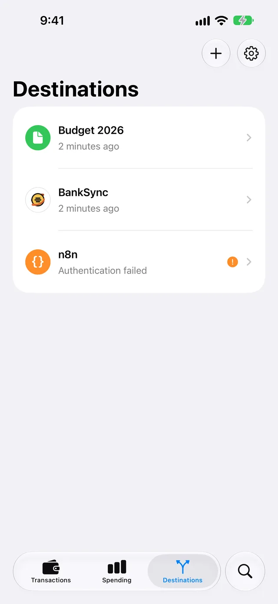

Background Sync
Background Sync sends your new and changed Apple Card, Apple Cash and Savings transactions to your destinations while WalletFeed is not open. To send transactions to destinations, you must have WalletFeed Pro. WalletFeed Pro is a subscription with a 1-week free trial, or a one-time Lifetime purchase.
Times that destinations receive changes
A destination receives a new or changed transaction at these times:
| Condition | A destination receives the change |
|---|---|
| WalletFeed is open. | In seconds. |
| WalletFeed is not open, and Background Sync is on. | Approximately 1 hour or less after the change in Wallet. |
| You tap your iPhone to make a purchase, and you have an After Each Card Tap automation. | Seconds after you tap your iPhone. |
| Your Every Day automation starts. | At the time that you set in Shortcuts. |
| You tap Sync Now in Settings › Sync. | In seconds. |
| You charge your iPhone. | At a time that iOS selects. |
While WalletFeed is not open, iOS also starts WalletFeed after a change in Wallet to update the Spending widget and Recurring Charge Alerts. WalletFeed makes these updates without WalletFeed Pro and while Background Sync is off.
After your iPhone starts again, WalletFeed does not send changes to your destinations until you type your passcode.
If Background Sync cannot open the folder of a CSV, OFX or QIF file, it does not update the file. WalletFeed updates the file when you open WalletFeed, when an automation starts, or while you charge your iPhone.
A new destination also receives previous transactions from the start date in Settings › Sync › Initial History. Initial History is All until you change it. A new Zapier, Make or Linear destination receives a maximum of 30 days of previous transactions. Refer to Send History.
Make sure that Background Sync is on
Background Sync is on until you set it to off. Settings shows the Sync section only with WalletFeed Pro.
-
In WalletFeed, tap Settings (the gear button) at the top of the screen.
-
In the Sync section, if Background Sync is off, set it to on.

-
Tap Done.
Add an After Each Card Tap automation
An After Each Card Tap automation sends each purchase seconds after you tap your iPhone to make the purchase. While Background Sync is on, this automation is not necessary. Without the automation, Background Sync sends the purchase in approximately 1 hour or less.
iOS does not let apps make automations. Thus, you add the automation in the Shortcuts app, and WalletFeed gives you the steps.
-
In WalletFeed, tap Settings (the gear button) at the top of the screen.
-
In the Sync section, tap Automations.

-
In the After Each Card Tap section, do the steps for your iPhone.
Paste the text in Shortcuts
If step 1 in the After Each Card Tap section is Copy Description, do these steps. WalletFeed shows them on iOS 27 with Apple Intelligence. It also shows them after you tap Describe It Instead.
-
Tap Copy Description.
Copy Description changes to Copied. WalletFeed copies the text
When I tap my Apple Card or Apple Cash card, run Sync New Purchase from WalletFeed without asking. -
Tap Open Shortcuts.
-
In Shortcuts, tap +.
-
Paste the text.
-
Make sure that the automation uses your cards.
-
Make sure that the automation starts without a message from Shortcuts.
-
Tap Done.
Make the automation on iOS 26
If step 2 in the After Each Card Tap section tells you to tap Automation, do these steps. WalletFeed shows them on iOS 26.
- Tap Open Shortcuts.
- In Shortcuts, tap Automation.
- Tap + or New Automation.
- Tap Transaction.
- Select your cards.
- Select Run Immediately.
- Tap Next.
- Tap New Blank Automation › Add Action.
- Type WalletFeed in the search field.
- Tap Sync New Purchase.
- Tap Done.
Make the automation on iOS 27
If step 2 in the After Each Card Tap section tells you to tap Add Action, do these steps. WalletFeed shows them on iOS 27 when Apple Intelligence is not available. It also shows them after you tap Set It Up Yourself.
- Tap Open Shortcuts.
- In Shortcuts, tap Add Action.
- Type WalletFeed in the search field.
- Tap Sync New Purchase.
- In the action list, tap Automation › Transaction.
- Select your cards.
- Tap the arrow adjacent to the trigger.
- Set Confirm Before Run to off.
- Tap the information button ⓘ › Privacy.
- Set Allow Running When Locked to on.
- Tap Done.
Add an Every Day automation
An Every Day automation sends changes one time each day, at a time that you select. It sends the changes that an After Each Card Tap automation does not send, for example purchases on the internet and changes to pending transactions.
Automations shows Every Day only when Background Sync is off or Sample Data is on. While Background Sync is on, an Every Day automation is not necessary. If you have an Every Day automation, it stays in Shortcuts and sends changes.
The steps for Every Day are the same as the steps in Add an After Each Card Tap automation, but these parts are different:
| Part | After Each Card Tap | Every Day |
|---|---|---|
| The text that you copy | When I tap my Apple Card or Apple Cash card, run Sync New Purchase from WalletFeed without asking. |
Every day at 9 PM, run Sync Transactions from WalletFeed without asking. |
| The trigger in Shortcuts | Transaction, then your cards | Time of Day, then a time |
| The WalletFeed action | Sync New Purchase | Sync Transactions |
| Step 5 in Paste the text in Shortcuts | Make sure that the automation uses your cards. | Make sure that the time is correct. |
- In WalletFeed, tap Settings (the gear button) at the top of the screen.
- In the Sync section, tap Automations.
- In the Every Day section, do the steps for your iPhone.
Last Run and the Automations value
iOS does not tell apps about the automations that you have. Thus, for each automation, Last Run shows the last time that its WalletFeed action started. If Siri or a shortcut starts Sync Transactions, the Last Run of Every Day also changes. Until the WalletFeed action of an automation starts for the first time, its Last Run shows Never.
Each automation has a time limit. The time limit is 14 days for After Each Card Tap and 3 days for Every Day. In Settings › Sync, Automations shows one of these values:
| Value | Condition |
|---|---|
| On | Each automation on the Automations screen started in its time limit. |
| 1 of 2 | One of the two automations started in its time limit. |
| Off | Background Sync is on, Sample Data is off, and After Each Card Tap did not start in its time limit. |
| Set Up | Background Sync is off or Sample Data is on, and no automation started in its time limit. |
For the messages that the automations show, refer to Siri and Shortcuts.
Get the Sync Stopped notification
If Remind If Sync Stops is on and WalletFeed does not send to all your destinations correctly for 3 days, you get the Sync Stopped notification. Each time that WalletFeed sends to all your destinations correctly, the 3 days start again. The text of the notification is "WalletFeed hasn't synced in 3 days. Open it to catch up." The notification does not show information about your transactions.
-
In WalletFeed, tap Settings (the gear button) at the top of the screen.
-
In the Sync section, set Remind If Sync Stops to on.
-
If iOS shows a message about notifications, tap Allow.
If you do not let WalletFeed send notifications, Remind If Sync Stops stays off.
-
Tap Done.
Send changes with Sync Now
When you tap Sync Now, WalletFeed sends the changes to your destinations.
-
In WalletFeed, tap Settings (the gear button) at the top of the screen.
-
In the Sync section, tap Sync Now.

While WalletFeed sends the changes, Sync Now shows a progress indicator. Then it shows a time, for example "1 minute ago".
-
Tap Done.
Stop Background Sync
If you set Background Sync to off, iOS starts WalletFeed after a change in Wallet. But WalletFeed then updates only the Spending widget and Recurring Charge Alerts.
- In WalletFeed, tap Settings (the gear button) at the top of the screen.
- In the Sync section, set Background Sync to off.
- Tap Done.
While Background Sync is off, your destinations receive changes:
- When you open WalletFeed
- When you tap Sync Now
- When an automation from Automations starts
- While you charge your iPhone
- At times that iOS selects.
The Automations screen also shows Every Day while Background Sync is off. Refer to Add an Every Day automation.
If there is a problem
If a destination does not receive a change after 1 hour
It is possible that Background Sync is off, that your iPhone started again, or that the destination has a problem.
-
On your iPhone, open WalletFeed.
While WalletFeed is open, it sends changes in seconds.
-
Tap Settings (the gear button) at the top of the screen.
-
In the Sync section, if Background Sync is off, set it to on.
-
Tap Sync Now.
-
Tap Done.
-
Tap Destinations at the bottom of the screen.

-
If a destination shows a problem, for example "Authentication failed", refer to Troubleshooting.
If Settings does not show the Sync section
Settings shows the Sync section only with WalletFeed Pro.
- In WalletFeed, tap Settings (the gear button) at the top of the screen.
- In the Subscription section, tap WalletFeed Pro.
- Select a plan.
- Tap Start Free Trial, Subscribe or Buy Lifetime.
For the plans, refer to WalletFeed Pro.
If you get the Sync Stopped notification
In the last 3 days, WalletFeed did not send to all your destinations correctly.
- On your iPhone, open WalletFeed.
- Tap Destinations at the bottom of the screen.
- If a destination shows a problem, refer to Troubleshooting.
- If no destination shows a problem, tap Settings (the gear button) at the top of the screen.
- In the Sync section, tap Sync Now.
If Last Run shows Never
The Last Run of After Each Card Tap changes only after Sync New Purchase starts. An After Each Card Tap automation starts it only when you tap your iPhone to make a purchase.
- After you make a purchase with your iPhone, open WalletFeed.
- Tap Settings (the gear button) at the top of the screen.
- In the Sync section, tap Automations.
- In the After Each Card Tap section, if Last Run shows Never, do the steps in Add an After Each Card Tap automation again.
If Remind If Sync Stops does not stay on
iOS does not let WalletFeed send notifications.
- On your iPhone, open the Settings app.
- Tap Notifications › WalletFeed.
- Set Allow Notifications to on.
- Open WalletFeed.
- Tap Settings (the gear button) at the top of the screen.
- In the Sync section, set Remind If Sync Stops to on.
Related
Updated October 30, 2026